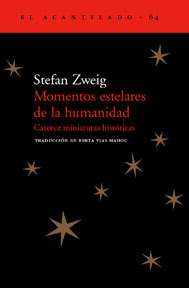

Momentos estelares de la humanidad: Catorce miniaturas históricas
Reseña por Jorge I. Zuluaga

Ver detalles · Ver reseña en GoodReads (necesita cuenta)
Desde el mismísimo prólogo, Zweig captura tu atención por la calidad de los textos y la profundidad de las reflexiones y las ideas con las que justifica su obra. Apenas en el segundo párrafo de todo el libro te encuentras con la frase: "Los millones de personas que conforman un pueblo son necesarios para que nazca un solo genio. Igualmente han de transcurrir millones de horas inútiles antes de que se produzca un momento estelar de la humanidad". Esta sensata declaración, justo al comienzo de un libro de divulgación histórica, no puede ser más honesta. Y es que, por muy bonita y rica que se presente en los libros, la mayor parte de la Historia (la verdadera, no la de los textos) está formada por hechos, procesos y personas completamente intrascendentes, punteada aquí y allá, ahora y antes, por unos pocos momentos y por algunos personajes únicos, a veces solo reconocibles en su trascendencia desde la perspectiva que nos dan las distancias espaciales, temporales o culturales.
Pero ¿cuáles son Los momentos estelares (en mayúscula) que marcaron el desarrollo de la historia de la humanidad? Allí es precisamente donde se encuentra la arbitrariedad de la Historia (la académica, la que se refleja en este y muchos otros libros). Los momentos estelares de la humanidad, y la selección de Zweig no es la excepción, son normalmente escogidos por los propios vencedores, por quienes dominaron o siguen haciéndolo. Este es uno de los lunares de este libro, junto con otros que describiré más adelante.
A pesar de la selección arbitraria, el texto escrito por Zweig es, desde el punto de vista literario, una verdadera joya.
Es difícil para mí escoger cuál de todas las "miniaturas" me atrapó y conmovió más. Algunas las conocía bien por otros libros.
Así, por ejemplo, la trágica aventura del capitán Scott y su llegada al Polo Sur está relatada con mucho mayor detalle en el grandioso libro "El peor viaje del mundo" (que deben leer todos los interesados en este momento, entre estelar y triste, de la humanidad - aquí mi reseña).
Por otro lado, la historia de la utopía de Woodrow Wilson, presidente de los Estados Unidos en los años de la Gran Guerra, quien soñó con el establecimiento de una paz mundial duradera a través de la creación de una Liga de las Naciones (la semilla de lo que hoy conocemos como las Naciones Unidas, a pesar de que la paz duradera de Wilson también sea todavía una utopía), está relatada con detalle y, aún mejor, a través de la magia de la novela histórica, por Ken Follett en La caída de los gigantes (aquí mi reseña). En ese mismo libro se cuenta también la historia de la salida de Lenin de su exilio en Suiza en 1917, con ayuda del oportunista gobierno alemán de la época, hacia Rusia, lo que daría inicio a la Gran Revolución de Octubre.
El capítulo titulado "La conquista de Bizancio" está narrado con lujo de detalles audiovisuales en la maravillosa serie original de Netflix "El ascenso del Imperio Otomano". Leyendo la magistral síntesis que hace Zweig de ese momento estelar de la humanidad (¿lo fue? ¿para quién?), juraría que los productores de esa serie se basaron en este libro para crearla.
Es obvio que las demás miniaturas históricas seguro tienen sus contrapartes en otros libros más extensos. Pero el parecido entre lo escrito por Zweig y el contenido de los libros mencionados arriba es lo suficientemente asombroso como para considerarlo puramente casual.
Volviendo sobre cuál fue mi historia favorita, he logrado reducir las posibilidades a dos de los capítulos más conmovedores de la Historia recogidos por Zweig en esta colección. De un lado está la fascinante e increíble historia (entre tragedia y comedia) de la creación del oratorio "El Mesías" por el gran Georg Friedrich Händel. ¡Qué historia! Del otro lado está la que el mismo autor reconoce como una ficción en la que narra los últimos días de Lev Tolstói. Puede que los hechos no sean como Zweig los describe, pero terminas amando a Tolstói y deseando leer sus libros.
Aquí está el verdadero logro de cualquier divulgador (en este caso de la Historia): conseguir que el lector desee continuar explorando los temas que comunica. No hay capítulo en el que no desees escuchar una obra musical (la historia del origen de la Marsellesa es asombrosa también), profundizar en la vida de un personaje o ver un documental sobre el momento histórico descrito. Otro punto para el autor.
Como lo mencioné desde el principio, una de las cosas más fantásticas de este libro (y adivino que de todo lo que escribió Zweig, del que me declaro a partir de este momento lector incondicional) es su increíble calidad literaria. La belleza de la prosa, la profundidad de las reflexiones y el aparente profundo conocimiento de los personajes y el espíritu humano, reflejado en lo que escribe Zweig, es propio de la Gran Literatura de todos los tiempos. Incluso uno de los momentos estelares se presenta como un poema; ¡descúbranlo ustedes mismos! Es por todo esto que el libro es una verdadera delicia para los "sentidos literarios" (porque deben ser varios, ¿o no?).
El libro está lleno de "dinosaurios en un dedal", frases maravillosas que condensan la sabiduría de personajes de la Historia o (en la mayoría de los casos) del propio autor, y que he compartido en este hilo en Twitter.
Pero no todo es perfecto, ya lo mencioné antes. Aunque soy de esos lectores que difícilmente califica mal un libro (lo saben quienes me leen y seguramente ya habrán perdido la "fe" en mi objetividad), un rasgo que se debe al hecho de que me es muy difícil calificar mal el tremendo esfuerzo de escribir, tampoco soy de los que no reconoce con sinceridad lo que no me gusta de una obra.
De "Momentos estelares de la humanidad" no me gustó un cierto tufillo machista y racista. Si bien ambas cosas (y este comentario no pretende en ningún momento justificarlas) fueron muy comunes en la época y las sociedades en las que vivió el autor, hoy no podemos tolerarlas; cualquier autor o autora que deje entrever cualquiera de esas actitudes debería recibir las críticas más severas.
Así, por ejemplo, en su descripción del emocionante "descubrimiento" del océano Pacífico por Vasco Núñez de Balboa, los indígenas americanos son descritos (a excepción de los poderosos gobernantes del Perú) poco más que como otra especie de tantas en la fauna de las selvas de Centroamérica (de hecho lo somos: todos los humanos, europeos y americanos, somos parte de la fauna del planeta); los indígenas aparecen bien diferenciados de los conquistadores españoles como seres sin cultura ni historia. En una grandilocuente descripción del momento estelar en el que Vasco Núñez de Balboa ve por primera vez el océano Pacífico, escribe Zweig: "el mar, el nuevo, el desconocido, hasta ahora únicamente soñado y jamás visto" (las negrillas son mías). ¿Jamás visto? Excepto al final de una sola frase, parece que el autor desconoce que los pueblos americanos sabían de la existencia del Pacífico miles de años antes que los europeos. El Pacífico no estuvo "millones" de años sin ser visto, como menciona en otro aparte.
En el capítulo dedicado a la fiebre del oro en California a finales de los 1800 (¡qué historia!), se le sale una "joya machista" despreciable cuando escribe: "Ocho días después el secreto ha sido revelado. Una mujer - ¡como siempre una mujer! - se lo ha contado a uno que pasaba por allí y le ha dado un par de pepitas de oro". Espero que presentar esta cita no desanime a algunos de los que leen esta reseña a saborear el resto de este gran libro; pero no podemos dejar de rechazar hoy los que hasta hace muy poco eran comentarios sexistas tolerados.
A lo anterior, debemos sumar el hecho de que ninguno de los "momentos estelares" seleccionados por el autor contiene una sola mujer como protagonista (bueno, sí, en el rol de personajes malvados; ya lo verán), una cosa que está siendo activamente revisada en el presente para beneficio de la Historia y de la humanidad (¡que está y ha estado siempre hecha, en un 50%, por mujeres!).
En síntesis: un gran libro al que no le faltan sus lunares.
¡No dejen de leerlo!